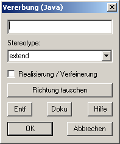

Beziehungen zwischen Klassen |
|
 |
Ohne Zweifel ist "PipiLangstrumpf" ein "Mädchen". Deshalb können wir zwischen ihr und der
"Mädchen"-Klasse eine Verbindung herstellen. Diese "Ist-ein" Verbindung nennt man in der objektorientieren Programmierung "Vererbung". Sie wird ertellt, indem wir auf den Vererbungs-Button klicken und im Anschluss von der "PipiLangstrumpf"-Klasse zur "Mädchen"-Klasse mit gedrückter linker Maustaste ziehen. Dabei sieht man ein Linie, die anzeigt, wo man sich gerade mit der Maus befindet. Wichtig ist, dass die Linie beide Klassen berührt. Nun muss man nur noch die linke Maustaste loslassen und es erscheint ein Pfeil an dem "extends" steht. |
Die Extends-Beziehung |
|
|
"Extends" bedeutet, dass "PipiLangstrumpf" ein "Mädchen" ist.
Im späteren Sourcecode äußert sich dies durch die Zeile "PipiLangstrumpf extends Mädchen".
Bei der Generierung wird diese Zeile automatisch erzeugt, das heißt, man braucht sie nicht selbst einzugeben. |
|
Richtung tauschen |
|
|  |
Möchte man den Vererbungs-Pfeil in die andere Richtung zeigen lassen, ist dies auch kein Problem.
Wenn nicht "PipiLangstrumpf" ein "Mädchen" wäre, sondern alle "Mädchen" wären
"PipiLangstrumpf", könnten wir durch einen Doppelklick auf den Pfeil den Vererbungs-Dialog aufrufen.
Dort klickt man auf "Richtung tauschen" sowie "Ok" und die Richtung wird getauscht. |
Diagrammansicht ändern |
|
|
Das Aussehen unseres Diagrammes können wir ebenfalls verändern. Die Farben der Klassen und aller anderen Diagramm-Komponenten ändert man, indem man im Menüpunkt "Optionen" die "Jumli-Optionen" auswählt und für jede Komponente die entsprechende Farbe aussucht. Die Anordnung der Klassen geschieht mittels "drag&drop". Dieser Begriff bedeutet, dass man eine Klasse mit der linken Maustaste anklickt, "festhält" und an eine andere Stelle zieht. Dort lässt man sie durch "Loslassen" der linken Maustaste "fallen". Mit diesen Funktionen lässt sich das Diagramm an die Bedürfnisse jedes Nutzers anpassen. |
|